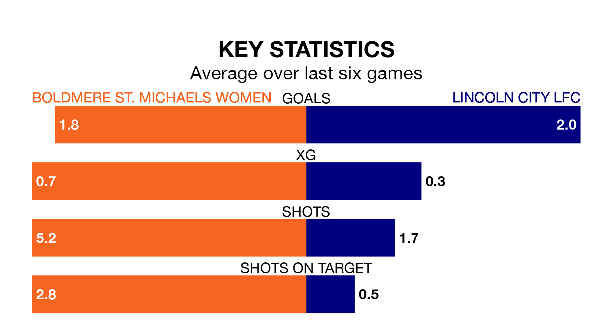

Boldmere St. Michaels Women host Lincoln City LFC on early Sunday on the back of six consecutive wins in the Women's National League Division One Midlands.
It means Boldmere St. Michaels have picked up the maximum 18 points from their last six games, and they face a Lincoln City side who have lost their last two matches, and collected seven points from the last possible 18.
Boldmere St. Michaels are second in the table after 13 games, of which they have won 10 and lost three, earning 30 points.
Lincoln City are six places behind the home side in eighth, with three wins and five draws putting them on 14 points.
With 28 goals in 12 games so far this season, the visitors are scoring more than average in the league with 2.3 goals per game. But they are conceding more than average too, letting in 26 goals at a rate of 2.2 per game.
Boldmere St. Michaels are also above average scorers, with 2.0 goals per game, compared to a league average of 1.8. They have conceded 1.1 goals per game.
In the last three years, Boldmere St. Michaels and Lincoln City have played each other on three occasions. Boldmere St. Michaels won two of them and they drew once.
Their last meeting was on September 17, when Boldmere St. Michaels won 3-2 away.
Boldmere St. Michaels's last match was on February 4, a 1-0 win against Sheffield FC Women.
Lincoln City drew 3-3 with Loughborough Lightning Women last time out, also on February 4.
Updated: 11:18 (UTC), 08/02/24